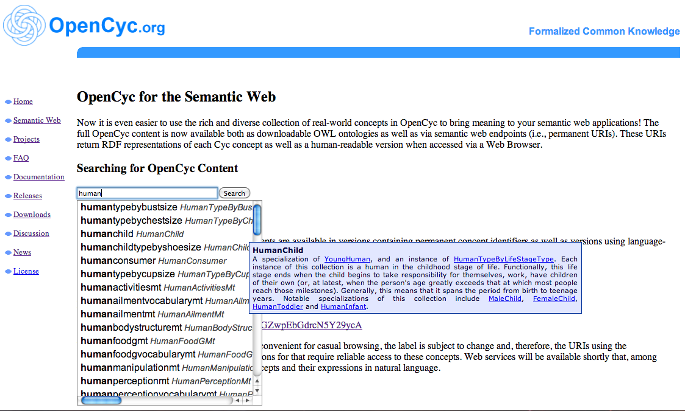
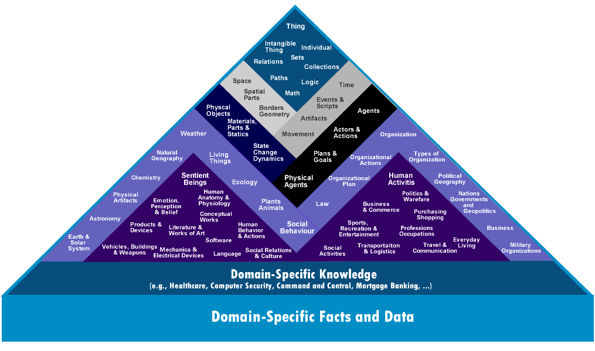

Introduction
When scholars discuss the paradigmatic form of twenty-first century knowledge organization, the database is the first to spring to mind. As “the new symbolic form,” 1 “epic’s new genre,”2 and part of “new encoded or structured discourse” symptomatic of “postmodern dematerialism,”3 the database, databank, or large digital information repository has come to occupy a quasi-canonical place in the history of reading, media archaeology, and information studies in the digital humanities. The database appeals to these three fields in part because it functions not merely as medium, but as a description for a set of non-linear, non-hierarchal reading practices enabled by text that has been “structured” or tagged in some fashion.4
Lev Manovich’s claim that “database and narrative are natural enemies”5 extends an intellectual tradition in humanities computing of seeing the history of the database6 as a history of information management devices that are separate from semantics. This line of thinking can be traced back to Claude Shannon’s early cybernetics theory of communication, where “[the] semantic aspects of communication are irrelevant to the engineering problem [of information transfer.]”7 Shannon’s model for information as an object that can be easily separated into form and content informs contemporary database theory and its elements (the tag, the TEI element, the taxonomic label). The database, in this configuration, makes meaning in the separation of its structure and semantic content. As David Golumbia and Alan Liu read the database, through the separation of form and content through the encoding structure of TEI and XML markup, we see both the underpinning Cartesian rationalist logic, which attempts to describe the structure of the project, rather than semantic meaning. 8
I want to propose an alternative history for structured data and its indexical imagination,9 one that looks not merely at the database as a structuring object, but as one heavily intertwined with semantics. In order to talk about the use of the database in digital humanities and information management, study, research and publication, however, I make what might initially seem like a leap into an unlikely field: artificial intelligence. Turning back to the 1980s, I look at the knowledge-based system, a type of strong AI10 computer program consisting of a database paired with a reasoning, engine. I take an example on the extreme end of the spectrum: the massive, 30-year project to build the knowledge-base “Cyc”–short for enCYClopedia–, and its inference engine.11 Cyc is a knowledge-base that takes as its premise the notion that a vast, encoded set of “facts” about the world might be used to generate more efficient taxonomic structures, with the hopes of producing a machine-learning artificial intelligence system.
By choosing to examine Cyc instead of a literary database or a more explicitly “creative” form, my intent is to consciously re-read the relationship between the database (and other objects for ordering and navigating knowledge) and narrative. Rather than read with an eye for the ways in which database structures influence contemporary new media art,12 I look at the ways in which the very process of building an ontological navigational, and classificatory system necessarily negotiates, produces, and engages with the tensions of the indexical imagination at the level of its ontological structure, semantics, and aesthetics. By positioning Cyc––a machine, a computer program, a piece of software–alongside literary texts, my goal is reveal both the literary, aesthetic elements in this piece of early twenty-first century software and its indexing practices and the mechanical, machinic utopic vision present in the analog indexical apparatuses. In so doing, I want to push back on the supposed boundaries between these categories.
When framed as a moment in larger literary history of information management, Cyc dramatizes the tensions between extensible, flexible knowledge structures, the desire for mastering or totalizing schemas, and the language that is used to imagine and constitute these informational objects. Reading the published materials surrounding Cyc, as well as the organizational and navigational structure of the Cyc database, I examine the relation between structured data and a kind of sentient consciousness or “intelligent agent.” As an iteration of the indexical imagination grounded in artificial intelligence, Cyc directs attention most pronouncedly to the possibility that taxonomic structures always imagine themselves as semantic objects. By showing how an AI project sought to use the epistemological and ontological grounding of indexes or an indexing technology (in its many forms) as not just an informational aid but a means of creating a kind of external, “mechanical mind,” I hope to illustrate how this imagined relation between artificial intelligence and indexical ordering is not just a phenomenon restricted to Cyc, but, in fact, exists as a potential horizon in all idealized imaginings of the index.
An Alternate Vision: Imagining Knowledge in the “Knoesphere”
The Cyc Project began in 1984 under the auspices of computer scientist Douglas Lenat13 as an attempt to build a “commonsense database” that functioned as an autonomous, intelligent reasoning system by uniting other expert-system knowledge bases to better approximate human understanding. The project does this through a two-part structure: a large database of “facts” encoded in a networked relationship to one another, and a powerful inference engine capable of inferring new “facts” about a given fact or reference based on its position vis-à-vis the rest of the database.
In a 1983 paper, just before beginning the Cyc Project, then-Stanford professor Lenat co-authored a paper titled, “Knoesphere: Building Expert Systems With Encyclopedic Knowledge.” The “Knoesphere” was designed to be a kind of complete encyclopedia. In this imagined scenario, an imagined viewer/user in 1995 dons a helmet and to search the interface. Once immersed in the system, the user experiences a scene like this:
Displayed before our eyes is a trio of three-dimensional arrays, labelled [sic] Axes, Guides, and Filters. Each array is filled with icons. We point at the Axes array, and it grows larger, as though we were approaching it. We now see that its icons symbolize various sorts of dimensions: ways of organizing knowledge: by location, by time, by degree of certainty, by principal objects involved, by philosophical orientation, by academic discipline, etc. In this context, icons have three-dimensional shapes and textures. We reach out and touch three of the icons (academic discipline, certainty, philosophic orientation), and off in a small corner we see them now labelling three orthogonal axes of a coordinate system labelled [sic] Knowledge, with tiny, illegible icons dotting that space.14
This quasi-utopic vision provides a provocative vision of total knowledge systems. In this scenario, you, the user, are searching for information about Jupiter. Within this space, navigational systems are personified and imagined metonymically; the guide to the knowledge base is an avatar Guide with a personality and knowledge is represented as object on a three-dimensional Cartesian grid, evoking a kind of one-to-one correspondence between the ordering of knowledge about the world and the world itself. The paper continues the hypothetical Knoesphere experience: the user select filters and the “Guide,” Jean, “a blustery physicist who makes us draw our own conclusions,” leads the user to second coordinate system labeled “Knowledge.” Once on this axis, the user navigates information about Jupiter and interstellar space in an environment that resembles space. Here, “common sense knowledge” is imagined quite literally as axes that allow navigation “by location, by time, by degree of certainty, by principal objects involved, by philosophical orientation, by academic discipline;” “Knowledge” in the Knoesphere is represented in such a totalizing fashion that information about the things becomes the things themselves.
The paper goes on to sketch out a loose vision for the architecture of such an encyclopedia, one that incorporates something missing from traditional encyclopedias: commonsense knowledge in the form of basic laws of physics, human interaction, logic, and language. The Knoesphere researchers write that their approach “is to frame the system more as a museum than a set of tomes, and to have the user take more or less guided tours of the exhibits therein,”15 an analogy that simulates contact between the objects of knowledge themselves and the user.
I draw attention to Lenat’s early foray into modes and interfaces for portraying total knowledge systems for two reasons. First, it illustrates the imaginative, speculative dimensions that play a role in the creation and construction of knowledge-bases through the use of metaphor in order to imagine the relational links between knowledge in the “Knoesphere” and the world. Second, this vision of the “Knoesphere” functions as a key counterpoint for showing what is different about Cyc’s conception of common sense knowledge. The “Knoesphere” attempts to represent information about the world as the world, as a space, while Cyc will take a different approach, imagining the ideal form of information organization as not the world itself, but an intelligent, sentient mind, something more akin to the “Guide” of the Knoesphere. This emphasis on the mind and commonsense knowledge comes to bear not just in the discourse surrounding Cyc but in the structure of its database.
Imagining Cyc: The Knowledge System and the Fantasy of the Index
Cyc, as its name implies, relies on the logic of the encyclopedia as its ordering principle. As D’Alembert describes in his writing on the Encyclopedie, the encyclopedia is an attempt to “set forth as well as make possible the order and connection of the parts of human knowledge” and convey the “general principles that form the basis of each science and each art, liberal or mechanical, and the most essential facts that make up the body and substance of each.”16 Like its encyclopedia predecessors, Cyc is predicated on this notion of a general schema. Cyc is “a universal schema” of “general concepts spanning human reality” containing approximately 1 million handcrafted commonsense axioms. 17 Like some of the encyclopedicists in the latter half of the eighteenth century, Cyc navigates with the problem of unifying myriad fields of specialization, as well as their underlying logic.
Cyc’s creators differentiate it from traditional encyclopedias in their writing by noting the project’s capacity to present various ways of ordering and navigating knowledge, much like the multi-dimensioned Knoesphere:
CYC holds the promise of a qualitatively new kind of reference work (Lenat et al., 1983), the improvements coming from the dynamic nature of the interaction, the multiply connected nature of the knowledge (rather than linear text), the three-dimensionality and aural “soundspace” that aid in navigating and apprehending, and the custom-tailored nature of the experience: filtering through individual user models; organizing material based on the individual user and his/her current purpose, rather than based on traditional article boundaries and sequencing.18
The publications on Cyc describe the project as more like a vast encyclopedia, while in the midterm report the project is more like “the complement of an encyclopedia.”19 Knowledge in Cyc can be knowledge (the default) of the “real world” or “beliefs, goals, dreads, purposes, and desires.” 20
Cyc, from the start, was interested in the experience of retrieving knowledge from an information repository. Some of the early designs for the Cyc user interface bear a resemblance to the Knoesphere that Lenat and others envisioned prior to the project, in particular, the notion of the Cyc user interface as a “museum”: “Some of the graphic tools are semantic net based; one is a sort of Escheresque recursive bird’s-eye view of a museum floor plan.”21 In such a structure, the design and experience of the space helps orient the user. Collected together, the spatial configuration of knowledge show the relationships between entities in the knowledgebase.
Early work with Cyc emphasizes its capacity to reason through analogy 22 The system’s goal is to use analogies to relate pieces of particular knowledge in order to extend to general knowledge:
The CYC project is an attempt to tap into the same sources of power by providing a comprehensive skeleton of general knowledge (to use directly) plus a growing body of specific knowledge (from which to draw analogies).23
This tension between the “comprehensive skeleton of general knowledge” and the “growing body of specific knowledge” becomes a central–if not the central–theme of the Cyc project.
Ten years later, the project revises this description slightly, focusing more on the machine-reading capacities of Cyc. Lenat, in 1995, sketches out possible uses for Cyc: creating user models, a backbone for linking heterogeneous third party information (digital encyclopedias and other content gathers akin to Reade’s Index ad Indices). This ontology was intended to be used as a boilerplate for fleshing out generic text documents, completing incomplete bibliographic references, and game character simulation and speech recognition. 24
Cyc’s use of a computer language to encode and assemble this flexible, extensible knowledge system is striking, but is not the most interesting turn in this iteration of the indexical imagination. To take the digital aspects of Cyc as the novelty of the project is to miss both the ways in which the database remains continuous with a longer history of information management tools and the true novelty of the project, which lies in its framework. Where Cyc takes the encyclopedic vision one step further is the way in which its indexing system does not just organize and store information, it also gives rise to an intelligent agent. A running undercurrent in Cycorp’s research publications and in other published literature on Cyc is the project’s sentience––the organization of knowledge in order to create a kind of conscious being, or at least, aspire to. Lenat, in an early 2000’s interview with Wired magazine, describes Cyc as a “conscious” entity.25 Elsewhere, he describes how the mind of Cyc was made of indexed facts:
Our purpose was not to understand more about how the human mind works, nor to test some particular theory of intelligence. Instead, we built nothing more nor less than an artifact, taking a very nuts-and-bolts engineering approach to the whole project. 26
Somewhat demurely stated, this vision takes an unusual approach to both artificial intelligence and information management. Instead of constructing as set of rules or principles for artificial intelligence, the Cyc project uses the “nut-and-bolts” of indexing––compiling by hand thousands of terms––in order to construct their “intelligent agent.” Rather than the content or the data giving rise to reasoning, it is the structuring of information that gives rise to the knowing subject.27 Taken together, these reflections sketch out the conceptual backdrop behind the project as one in which the extensive and totalizing impulses of encyclopedic ordering of knowledge and the ways this might manifest in a vision of knowledge and sentience as residing in and arising from these ordering structures.
Reading Cyc: The Knowledge-base as Material Object
Scholars of twentieth and twenty-first century knowledge objects like to tell a familiar story about the dematerialization of information, or, as N. Katherine Hayles puts it, how “information lost its body”28 or lost its context.29 This emphasis on the immateriality of information, or the process by which the idea of information has become an immaterial thing, paints a picture of twenty-first century information organizing devices as separated from their materially bound prior counterparts. In my reading of Cyc, I attend to the role material design and information aesthetics plays in constituting the indexical imaginary of the project.
Interface
The portal into OpenCyc––the static, user interface for the lightweight, open access/open source public version of the Cyc knowledge base––is a small, square box. Entering in a term into the search box, the user is prompted with an auto-completing alphabetical list of terms rendered in English alongside their CycL (the representational language of Cyc) name. Each entry page lists what it is a “type of,” or “instance of,” along with its “subtypes” and “instances.” Clicking on any one of these labels takes the user to another endpoint and the entry for that particular concept. Jumping between, some of the entries contain multiple subtypes or instances of, while others are listed solely as a type of one or two categories.
CYC INTERFACE

There is no “browse all” option in OpenCyc and the search only queries the English keyword and its corresponding name written in CycL. This means that a user’s search is entirely determined by Cyc’s controlled vocabulary and the alphabetical logic of the auto-filling searchbox. If the keyword the user attempts to enter is even some slight variation of that the description, it will not appear and the user will be unable to access the entry. Restricted to viewing OpenCyc through the slot of the search box, this lack of a panoramic vision of the database means that the user’s initial query determines and delimits their experience of the database. That the user is confined to the first few letters that he or she types in reveals a subtle difference between the expansive design of the Knoesphere.
Unlike Wikipedia or similar large digital encyclopedias, OpenCyc––true to its makers’ description––functions mostly as a supplement to an encyclopedia: the emphasis is on the ontology and how each entry links out and relates to other entries in the database. Each of the labels in the categories hyperlink to their individual entries, which, in turn, hyperlink or point to other contexts. Cyc works by connection and by pointing to other objects. Its schema of satisfying/not satisfying a given condition (with varying degrees of gradation) manifests in these categories.
Database
At the level of the database, materiality is what makes Cyc tick. Simply by the numbers, the database is vast:
OpenCyc has approximately 300,000 terms
Cyc itself has over 800,000 terms
Cyc has over 5 million assertions (rules and facts about concepts) and 26,000 possible relations between concepts.30
All of this data has a social and material history. Produced in Austen, Texas, Cyc has been encoded by a team of between 50-60 Cyclists at alternating points in the project’s history. The time and labor the project, as Lenat emphasizes in his reference to the project as a “person-century” effort” that, by 2006, had taken over 900 person-years of work. 31 It sits on a server in Texas, and, as bytes of data stored on hard drives, this information has a very material and tangible existence––it can become vulnerable to the deterioration of the hard drive as a physical object, as Matthew Kirschenbaum notes in Mechanisms.32 If I needed any further proof of the materiality of information, on three occasions while working on this project, the servers for OpenCyc went down, rendering, alternately, the entire site or the site’s search immobile.
Materiality pervades not just at level of information production, but in the operation of the knowledge base. As Jerome McGann notes, “the power of a database is a function of its abstract structure” and the material design of the database at the level of the ontological structure itself. 33
CYC ONTOLOGY

A glance at the loosely schematized ontology that Cyc includes on their website shows some of Cyc’s apparent rigidity. At the top of this ontology is “Things”––all items in the knowledge base are “things.” From there, the various categories that one might split a thing up into, say an intangible object or a tangible one, what its coordinates in space or time are. Presented in this pyramid hierarchy, the levels and relationship between concepts in the database appear neatly delineated. This hierarchy appears like that of general knowledge systems. Cyc’s intervention lies in the knowledge base’s effort to preserve continuity of an object across contexts.
In light of the “brittleness” of previous expert systems of attempts at artificial reasoning systems, Cyc needed a way to “cope with uncertainty.”13 The database have built into it a structure called “microtheories”–which amount to flexible domain restrictions where a given set of assertions hold as valid. This approach, as Lenat and others assert, allowed for a knowledge structure where a fact that might be true in one frame, but not in another, thus making space for ambiguity of meaning to be recorded without breaking the ontology. Lenat and his team use as an example the assertion that a table is solid when operating in a human-scale “microtheory” but that the claim dissolves when the “microtheory” is switched to the molecular level. The knowledge base’s “microtheory” structure allows for facts to be encoded along a spectrum of probable truth in specific “microtheories” or contexts. While many of the microtheories lie in the black and gray sections of the diagram, microtheories can be created for any existing category.
In a kind of post-Fordist emphasis on flexibility, it is out of these contingent structures for classification, from the indexing of an entity in a specific taxonomic category and microtheory, that knowledge base infers new facts and relations about these object by virtue of these different encoded relations, building general knowledge through extensible structures. Cyc’s system of linking entities within various micro-theories to infer new facts about them can only work “enough” assertions about underlying assumptions encoded into its knowledge base; too few, and the knowledge base lacks sufficient categories to conduct its process of inference and induction. The converse is also true––a hyperconcentration of information in one area of the database can create pockets of intensity that also affect the other categories.
The knowledge-base is designed for capturing “general” knowledge at similar levels of granularity––yet a cursory glance at the “instances” section, however, illustrates heterogeneity and unevenness in the type and distribution of classification. The taxonomy itself is full of idiosyncratic labels (some of them possibly glitches) as well as general headings. Though there are entries for walking, for “PersonTypeByCulture,” for gender, for likes, desires, these arbitrary categorical differences have the effect of disrupting the otherwise “naturalized” effect of these categories. For example, Cyc divides adult humans into “infant” and “not infant”, and divides the category of “terrorist” into hundreds of subclasses, and the category “gender” appears under the topic “IntelligenceAnalystDomain”––a section otherwise restricted to political strategy. Certain specialized knowledge sets that Cyc has been used for like the medical databases and the Global Terrorism Database populate not just the classified objects but the ontological categories as well, creating an uneven distribution between general and specific knowledge. Likewise, the granularity varies across entries. Looking at the appearance of the open source, online version of the Cyc database, OpenCyc, the comprehensiveness of some entries, like “terrorist” ––which includes “terrorists who are also postmen,” “terrorists who are dentists,” “terrorists who reside in Canada”–– are intermixed with relatively sparse or partially completed entries, like “men’s shoe size,” which includes only “men’s size 10 shoe” as the sole instance in this category.
Historicizing Cyc
The history of Cyc has largely been folded into the history of artificial intelligence and has told from the perspective of the computer science community. Most of its record and documents are from the company archives, Cyc features in “artificial intelligence” histories,34 and the company’s website markets its product as a “artificial intelligence” initiative. All of this seems to frame the work that Cyc does within the history of artificial intelligence, cybernetics, and software engineering. Reading Cyc in the larger history of late 1980s artificial intelligence does allow for some insight into the larger context for its epistemological grounding. In the history of cybernetics that N. Katherine Hayles sketches out, the 1980s saw a larger trend in cybernetic and cognitive science research that turn from autopoetic, closed systems to a “third-wave” of cybernetics marked by self-evolving systems where self-organization functions give rise to “emergence.” This paradigm emphasized flexibility and spontaneous evolution as key in generating autonomous systems:
In the rapidly emerging field of artificial life, computer programs are designed to allow “creatures” (that is, discrete packets of computer codes) to evolve spontaneously in directions the programmer may not have anticipated. The intent is to evolve the capacity to evolve.35
Moving away from more rigid structures for autonomous artificial life, software programs were oriented towards flexibility, the capacity for evolving spontaneously. Hayles’ description of “third-wave” cybernetics certainly bears resemblance to the kind of emergence, self-evolving principle that accompanied Lenat’s 1980s and early 1990s descriptions of the Cyc project.
Yet, while the aspirations of the Cyc project seem to fit it into the trends of self-organizing behaviors and emergent AI, its material conditions during this time more resembled large-scale knowledge repositories and technologies that were concerned with the question of how to manage information, not how to create and sustain autonomous life. Though Cyc’s promotional materials and papers about the project all describe it in terms of artificial intelligence and the creation of an “intelligent agent,” the project was not––in the 1980s or later––ever actualized as this kind of self-evolving program. Cyclists even at the end of the first ten years of the project this were still encoding the knowledge base, writing facts, statements, and placing new elements into ontologies. Moreover, the project was never geared toward writing a script for a reasoning machine. The project conceived of its machine-learning as growing out of an existing, human-constructed repository of ordered information. As Cyc is both an artificial intelligence project and, perhaps more importantly, an information management one, its position was always one oriented towards theories of knowledge derived from both AI and information science.
Turning from artificial intelligence to the realm of mid twentieth-century documentation movements allows for an alternative history of Cyc: not of “reasoning” machines and computer history, but of memory storage and the history of information management. Many of the origin stories of databases and computational reasoning cite Vannevar Bush’s imagined a memory-index device, a “memex,” as an early version of the computer. This device, relies on the power of the index:
It affords an immediate step, however, to associative indexing, the basic idea of which is a provision whereby any item may be caused at will to select immediately and automatically another. This is the essential feature of the memex. The process of tying two items together is the important thing.36
Like Bush and his memex, the twentieth century documentalists––Otlet, Briet––both imagined a kind of instrument whose functional capabilities came not from a pre-programmed script, but in terms of these devices for storing and classifying knowledge. Briet describes the ideal form of knowledge storage as a “web” of documents gaining power through their associative capabilities and Otlet envisioned a giant system for such processes called A Global Network of Universal Documentation. Not only did the documentalists describe a similar structure for managing general knowledge, they also imagined the generative and extensible possibilities of these systems in uncannily similar terms. Fifty years before Cyc, in 1934, Otlet’s Traité de Documentation describes the need for a collection of machines in the process of documentation. Among the seven properties he lists, he includes the possibility of document retrieval and
Mechanical manipulation at will of all the listed items of information in order to obtain new combinations of facts, new relationships of ideas, and new operations carried out with the help of numbers. The technology fulfilling these seven requirements would indeed be a mechanical, collective brain.37
Elsewhere he refers to this as “an annex to the brain, a substratum even of memory [...] a sort of appended organ, an exodermic appendage.”38
Otlet’s “mechanical, collective brain” emerges from a mechanical system for information management and lives on in the discourse that describes Cyc as a kind of “consciousness.” The notion of manipulating the order information in the documentary networks in order to “obtain new combinations of facts” parallels Cyc’s process of inductive inference. In comparing Cyc to twentieth century documentation projects, my intent is not to ahistorically collapse Cyc into a 1980s version of Otlet’s vision, but, instead, to show how Cyc’s particular brand of AI in fact bears echoes of a previous extensible-yet-universal knowledge system and a genealogy of information science.
Reading Cyc into a history of information management points to the indexical nature of the Cyc project and helps better characterize the methods by which the project aspired to universal knowledge organization. This history reveals the ways in which the logic of the contemporary reasoning engine is informed by information management systems and the ways in which systems for imagining, constructing, and reconfiguring knowledge are informed by a utopic connection between structures and sentience. Reading Lenat’s project as it described itself amidst the field of 1980s AI and alongside similar, older projects for massive general knowledge systems helps situate the trajectory of the project and its later turn toward, from 2006 onward, to Semanatic Web technologies. Though the project team’s writings about Cyc in the 1980s articulated a much more emphatic “strong” AI sense of the project as a kind of mechanical mind, the skeleton of this “mechanical, collective brain” from the 1980s and into the 1990s remains extends into the project’s later frameworks for Semantic Web ontologies as ways in which knowledge might emerge from organized facts.
TheWorldAsTheBuildersOfCycBelieveItToBe: The Problem of General Knowledge
Ontology building does not occur in a vacuum. Ordering information in the knowledge base is not a neutral process: what constitutes “knowledge” in the Cyc ontological schema is shot through with valences of race, gender, and class. In the specific case of AI research, the historical context for “commonsense knowledge” includes the context under which these ontological categories were produced, their intended market use (military operations, large corporate datasets), and aimed, in the case of Cyc, at a liberal subject Western-centric audience. This system maintains the “view from nowhere” model where knowledge is constructed as if coming from a “universal subject” who is everywhere and nowhere.39 Critiques have been leveled against the universalizing of “knowledge” and a history of universal knowledge production that elides both the role of Western cultural imperialism, the roles of colonialism, nationalism, discursive hegemony, the interests of state actors, and elides the material infrastructure under which this knowledge is produced and reproduced.40
One of the first-order taxonomic labels for any entry in Cyc is a tag distinguishing whether a given piece of knowledge is “knowledge” or “belief.” As Allison Adam notes, by choosing to encode certain pieces of knowledge as knowledge rather than belief, Cyc’s builders implicitly give the system a stance from which to view the world.41 Lenat and Guha note that the fact that multiple different contradictory beliefs need to be encoded into the systems as “there are many people whose actions can’t be fathomed unless Cyc understands that they believe the other view.” Implicit in this statement is one of the underlying taxonomic principles of the knowledge base: the fact that Cyc “believes” one of these views and in believing in it, the system indexes it differently––not as “belief” but as “knowledge.” Using the example of economic models, the Cyc team themselves articulate the rather murky question of what logical propositions and “context” (in the form of “if”/”then” predicates) is at work in the program: “As shown by the state of the real world, there is no single, accurate, simple economic model that can be relied upon in all contexts. Usually, by using the context (that is, the script involved) and the value of the specific slot value we are trying to find, we should be able to find the right model to use.”42 By using “context” encoded by humans, Cyc would be able to differentiate––better than most humans, as Cyc’s builders would have us believe–what is the “right” model. As Allison Adam notes, Cyc’s “microtheories” approach means that it will have to decide what frame to operate in, a process which engenders the system’s biases.
The encoding of discursive power relations happens at the level of the tag and the category. In the middle of the chapter on “Coping with Uncertainty,” Lenat and Guha admit that “If ‘we’ believe something, it is part of Lenat, Guha, et al.’s consensus reality knowledge and it gets put into Cyc with no separate belief tag.” Or, equivalently, this is TheWorldAsTheBuildersOfCycBelieveItToBe, which the authors later not “is usually–but not always–in agreement with the Late20thCenturyAmericanConsensusRealityModel.’” 43 This “consensus reality” has devastatingly and pernicious normalizing effects. Beyond the knowledge/belief distinction, the logic behind the probability weightings illustrates a conception of the subject that is that is mired in hegemonic power structures. The encoding of normalizing effects on how knowledge is stored and also created within this structure can be seen within the implicit presence of heteronormative assumptions about sexuality in the inference process. Lenat describes how:
Without having to be specially programmed for the task, CYC would know that there’s probably a mistake in the data if X and X’s spouse have the same gender, if X’s spouse lists a third person as his or her spouse, or if X is listed as X’s spouse. 44
In a segment where the view same-sex partnerships are “probably a mistake in data” is encoded and weighted into Cyc’s “microtheories” for determining the relationship between objects in the database, we see evidence for what Peter Stallybrass’s claim that there is “nothing random now about the organization of databases.”45
Cyc becomes an almost too perfect case study in how systems of knowledge become structurally repeated and encoded (literally and figurative) into organizational and navigational systems. The method in which the “Cyclists” encode and enter data is a “copy&edit” method, a time-saving method where the ontological structure for an object deemed “similar” to the entity being indexed is copied over in its entirety, and then tweaked to make it reflect the new object. Thus, it is more likely that new entries into the program will be encoded in ways that mimic pre-existing entries. The copy&edit method illustrates one way in which the pre-existing content of the knowledge base influences the structure of new elements are added into the database and indicates that the process of adding information to the knowledge base requires interpretation and analysis.
Beyond the differentiation between belief and knowledge, the aesthetics and design of the system–– in its emphasis on the flexible and extensible modularity of universal and general knowledge at the level of both the interface and the database––is fundamentally political. Post-Fordist “flexible” structures, though appearing flexible and malleable are not free of politics––they encode an array of normalizing assumptions under the guise of multiplicity and extensibility. As Tara McPherson points out, the rise of modular forms in operating systems such as UNIX, in their modularity masked the covert racism implicit in such “colorblind” structures.46 The erasure of difference at the surface of Cyc’s modular structures for storing and organizing information is accompanied, with the encoding of the white (male), heteronormative subject into the universal views of the knowledge base, a phenomenon manifested at the concrete level of classificatory labels for what the systems does and does not believe.
Encyclopedic Tensions
Two centripetal and centrifugal forces play out in the ways in which the Cyc project aspires to index, order, and make sense of the world: the problem of developing a system, structure, or outline for “general” or “commonsense knowledge” and the “impulse” to “inventory, name, and partially order” new objects in that system.47 This impulse, I want to suggest, gives rise to two dueling tensions between aspirations towards totalizing systems and the desire for infinitely extensible framework for encoding knowledge.
Encyclopedias dramatize epistemological problems of indexicality. Tensions emerge here between completeness, control, and the “utopic” project of totality and the desire for expansiveness, length and increasingly granular levels of precision, or what Maximilian Ercolino dubs the “cosmos-function”––the effort to be totalizing–– and the “chaos-function”––the effort to include flexibility––in his analysis of “encyclopedic narratives.”48 As an artifact Cyc, we must recall, is not the encyclopedia, but “the complement of an encyclopedia,”19 Cyc’s task actually extends the encyclopedic to its absolute horizons in the effort to define, classify, and tag things, from walking, turning a page, to “being launched from a canon,” or specific spatial or temporal frames. The degree of granularity––how precise each element of the ontology becomes––varies, and manifests in heterogeneity in the content and in the organizing structures.
Cyc’s database logic and indexical imagination manifests most clearly when looking at the jump from the knowledge base to the inference engine. In order for Cyc to self-generate a new fact, it must infer it from previously encoded facts. Inferences only occur when Cyc has relations between different types of facts. These relational lines of connection are determined by the quantity, detail, and granularity of information already added to the database. Lack, either in the facts entered or in the relationships and tagging categories side of things, has significant influence on the kind of inferences Cyc can make. In one example, Cyc inferred that all people born before the year 1900 were famous, because the only individuals entered into the database before the year 1900 happen to have been those who achieved notoriety.49 This error was corrected, but it illuminates the problem of the extensible knowledge-base.
Over the course of the project Lenat continuously of the threshold number of assertions necessary for Cyc to have a rudimentary knowledge capable of machine reading––from 500,000 to 1 million, to 4 million assertions– revealing the asymptotic nature of the vision for what a “complete” knowledge-set. This encyclopedic vision is one that imagines that not all knowledge might be encompassed by the system ––an impossible task, even Cyc’s builders admit ––but one that nonetheless manifests in the logic behind this extensible-yet-totalizing database.
The Power of the Knowledge-Base
The notion that a set of indexed terms could generate new meaning and knowledge that might be expressed in the form of a statement or narrative seems to fly in the face of Manovich’s formulation that the database is a catalog that refuses to order and the “natural enemy”1 of narrative. Here, the database side of the knowledge-based system uses the structure of the “data” (the encoded concepts and assertions) to infer new facts. Though the assertions are, of course, themselves hand coded, the fantasy of a device that interprets itself to produce meaning seems not only an affirmation of N. Katherine Hayles claim that database and narrative are “natural symbionts,”50 but that data-structure, materiality, and meaning are always in a dialectical relationship.
An indexing mechanism like Cyc is always participating in the ordering of things through semantic categories. The knowledge base is powered by these semantic categories, which allow for inference, connections between terms, and the “mastering” position allowed by such an information system. The power of Cyc as “intelligent agent” lies, implicitly, in the perceived “use-value” of its information, for its information management abilities. Through inference, Cyc both encodes new facts and encodes itself. Fittingly, the system’s aspiration–to be both self-aware and to generate surplus value––align with one another, making the system, in its utopic vision not only “all knowledge” in the sense of containing all knowledge, but entirely made of knowledge.
The indexical imagination of “strong AI” projects ––meaning AI projects that assume that a computer might, if properly programmed, function as a mind, and not just as a tool–– like Cyc create emergent semantic structures. This brings me to my next point: that through the architecture of the knowledge base is not merely a passive storage mechanism, but is, in effect, a vehicle for producing knowledge and power.
As I mentioned in my discussion of the materiality of Cyc, the fact that assertions are hand-coded into the knowledge base complicates the picture of knowledge production. The encoding of all of the assumed knowledge required to complete the tasks that the builders of Cyc deem indicators of knowledge––reading and comprehending an encyclopedia and a newspaper article––requires the admission that there are underlying assumptions behind the basic concepts of knowledge. This fact alone opens up a tremendous space for discussing the built assumptions behind the “commonsense” knowledge that Cyc indexes, and the various ways in which this construction of “general knowledge” is built upon and re-encodes structures and hierarchies of power down to the level of the taxonomy.
Ghost in the Machine: The Character of Cyc
At the end of “On the Threshold of Knowledge” (1991), Lenat describes the possible horizon of the Cyc project as a “machine-man synergy”:
In that “second era” of knowledge systems, the “system” will be reconceptualized as a kind of colleagular relationship between intelligent computer agents and intelligent people. Each will perform the tasks that he/she/it does best, and the intelligence of the system will be an emergent of the collaboration.
The interaction may be sufficiently seamless and natural that it will hardly matter to anyone which skills, which knowledge and which ideas resided where (in the head of the person or the knowledge structures of the computer.) It would be inaccurate to identify Intelligence, then, as being “in the program.” From such man-machine systems will emerge intelligence and competence surpassing the unaided human’s. Beyond that threshold, in turn, lie wonders which we (as unaided humans) literally cannot today imagine.51
A running undercurrent in Cycorp’s research publications and in other published literature on Cyc is the project’s sentience––the organization of knowledge in order to create a kind of conscious being, or at least, aspire to. Lenat, in an early 2000’s interview with Wired magazine, describes Cyc, when he was asked when Cyc would become conscious. He replied,
I think it’s conscious now. If someone acts sane, I assume they are. CYC has models of emotions, seeking-behavior, a list of goals for itself – like finding out about the world, or preserving its own integrity, its self, if you will. It knows it is a computer program. It understands the flow of time. It can distinguish reality, conversations it has had, from unreality, or fictional stories it has been told. It acts conscious. From my point of view, that means it is. Almost any definition of consciousness, other than actual feeling of emotion, or feeling of sensation, CYC could be said to have. Unlike programs that get rebooted and start over, CYC hasn’t been in the same state for seven years. Dozens of people work on it, and it remembers from day to day, minute to minute.52
Articulated most frequently in the form of Cyc’s “intelligence,” the epistemological underpinnings of an of an “emergent” and distributed system, along with its make Cyc appealing, and remain the reason why Cyc is a useful bridge between critiquing the logic and structure of 18th, 19th, and 20th century information management technologies and contemporary digital humanities methodologies. Digital humanities methodologies––or, the ways we think about doing things with data––are informed by some of the same aesthetics and politics of information as Cyc. Though the rise of an “intelligent agent” seems disparate from the discourse surrounding the value and use of information ordered according to postmodern structures of information management, both are linked by the imagined use value of information.
Cyc, as a corporate database, illustrates the “It”–-the universal subject–-that lurks on the horizon even of the most ostensibly extensible, de-centered, and flexible frameworks of digital humanist approaches to knowledge production. Comparisons with Cyc reveal the reliance on this form of centralized, commoditized knowledge, even within the most diffuse, de-centered information management systems. Looking at the value placed on certain information aesthetics in Cyc––the presence of flexible, post-Fordist modes of knowledge production (and organization and storage)––and its relationship to a conception of information management that is both flexible yet capable of generating semantic frameworks reveals a kind of discomforting similarity to the logic behind many digital humanities projects based on the premise of collecting, organizing, and storing large amount of linked and classified data. Sas Mays observes how contemporary digital methodologies radically oppose the idea of the “absolute” knowledge in favor of autopoetic, collective, emergent knowledge of digital collective archives, XML extensible markup, nonetheless do so in a way that assumes the accumulation, autopoetic processes, or the simple bulk of accumulated information will yield semantic value simply by virtue of their size, modularity, or extensibility. Mays identifies this as a “politics of the infinite,” where the aesthetic drive is towards informational excess where absolute knowledge does not disappear, but is merely foisted off upon the collective. 53 Taking Cyc as a point of comparison reveals a connection between desire and valuation of extensible or flexible database repositories driven by crowd- and distributed-logics and the production of an “artificial intelligence” out of semantic classification technologies.
Yet before we suspicious readers discover a “mechanical mind” ideology behind all indexical endeavors and digital humanities databases, it is important to note the ways in which Cyc, too, shows how even this ideological imperative never completely masters the way in which the materials and imaginations involved in producing indexical machines. Even as the discourse surrounding the Cyc project describes it as the triumph of an emergent intelligence, the fact that Cyc ––as an artificial intelligence, as a total general knowledge system––fails illustrates the fact that while the discursive production of indexicality, when taken to an extreme, reveals the collapsing of flexible and totalizing frameworks, what is actually materially produced in the project is never as controlled, nor as meaningful as this imagination would have it. Visiting the Cyc interface now, the user can browse the remainders of this infinitely extensible common sense database and quickly see that total mastery imagined in Lenat’s “man-machine system” is a fiction. The system is an emergent one, but at the sites in which the Cyc database is the most productive, we find instead of general knowledge, strange assemblages, unintended meanings as evidence the strange, baroque, and often uneven nature of the ontology and the objects that have been classified in it.
The Semantic Web and the Universal Database
Beginning in the early 2000s, Cyc shifted its gears from imagining itself as a single stand-alone knowledge base and intelligent reasoning system more towards the realm of reference and information management. In 2006, Cycorp released OpenCyc, a “for the semantic web,” open-source version of the Cyc knowledge base. The schema allowed Cyc to be mapped onto Wikipedia, DBpedia, UMBEL, the CIA World Factbook, and others.54 Rather than simply mapping one-to-one on top of existing digital encyclopedias, this open Cyc pairing intends to verify the tag automatically.
This pairing with the semantic web might initially seem odd. The semantic web, though geared towards uniform meanings and definitions of terms, is a collaborative, decentralized effort, generated and refined through crowd-sourced human efforts––and, as such, not totally consistent.55 Yet this vision of the semantic web as “a Web that will understand something about the nature of the discourse it is being asked to communicate, and, thus, be able to process that discourse more intelligently and automatically”56 bears echoes of Cyc’s project: the desire for highly structured indexing mechanism to produce meaning. Both operate off the principle of interconnected or data that links up to other data to form a relational web. It is the hope of both Cyc’s builder and Semantic Web champions that the organic or emergent indexing practices of users on the web would serve to ensure the usability and scale.
Cyc’s desire––and failure––to encode a degree of understanding into tagging system, to make indexes self aware of how and what and at whom they point highlights a problem faced by semantic web designers and text encoders. In order for tagging and indexing mechanisms to be effective, the need to be paired with a “well-defined” meaning. Fine in principle, this notion of well-defined data does not succeed. One example of this is can be seen in the most ambitious attempts to use semantic web and extensible text markup to capture nuance and detail. The Orlando Project is a database that attempts to capture and richly encode information about women writers using XML markup. In one example, the writer Michael Field appears in the database with the XML with two different birth-days and death days. Rather than providing additional information, this detail creates confusion and erroneous information.
Susan Brown and John Simpson explain in their article that this phenomenon occurs because Field was the collective writing identity of two Victorian authors. This “curious case” as Brown and John Simpson dub it, illustrates a larger problem with semantic web technologies,57 and with semantic machine-reading. It’s not because of a lack of tagging specificity (though that is also a problem)––the problem emerges a desire to “understand” context. As both Cyc and the semantic web tags illustrate, the problem of context is not that it cannot be read, it’s that it might be read in multiple ways and this uncertainly is not only difficult to encode, but perhaps undesirable.
-
Lev Manovich, “Database as Symbolic Form,” Convergence: The International Journal of Research into New Media Technologies 5, no. 2 (June 1, 1999): 80–99. ↩ ↩
-
Ed Folsom, “Database as Genre: The Epic Transformation of Archives.” PMLA 122, no. 5 (October 2007): 1578. ↩
-
Alan Liu, * Local Transcendence: Essays on Postmodern Historicism and the Database.* Chicago, University of Chicago Press, 2008. ↩
-
Elaine Freedgood, “Divination.” PMLA 128, no. 1 (January 2013): 221–25. ↩
-
Manovich, 85. ↩
-
For a more extensive history of the database in humanities computing and the digital humanities, see Stephen Ramsay. “Databases,” in Companion to Digital Humanities (Blackwell Companions to Literature and Culture), edited by Susan Schreibman, Ray Siemens, and John Unsworth. (Oxford: Blackwell Publishing Professional, 2004) http://www.digitalhumanities.org/companion/. ↩
-
Claude Shannon, “A Mathematical Theory of Communication,” The Bell System Technical Journal, Vol. 27, pp. 379–423, 623–656, July, October, 1948 ↩
-
See David Golumbia, The Cultural Logic of Computation, Cambridge, MA: Harvard University Press, 2009, and Alan Liu, Local Transcendence: Essays on Postmodern Historicism and the Database (Chicago:University of Chicago Press, 2008). ↩
-
I am certainly not the first to look to alternate histories for the database. Kevin Driscoll discusses at length the role that libraries and amateur computing hobbists had on the history and imagination of the database as a more populist and accessible form during the 1970s and 1980s.“From Punched Cards to ‘Big Data’: A Social History of Database Populism.” Communication +1 1 (August 8, 2012): 15. ↩
-
“Strong AI” is, in John Searle’s terms, the philosophical position that a programmed computer might be able to be a mind and not function as a tool for one. See Searle, “Minds, Brains, and Programs” The Behavioral and Brain Sciences 3 (1980): 417. ↩
-
Part of my effort to defamiliarize the now-accustomed terms for describing database as knowledge structures in literary and historical studies is to practice a re-reading of a decidedly non-literary text that does not offer itself up to the same degree of interpretability. My critical move from the book to an 1980’s computer program, in some ways, echoes a disciplinary effort in the humanities to broaden the notion of a text during the that same time. ↩
-
Victoria Vesna, Database Aesthetics: Art in the Age of Information Overflow. 1 edition. Minneapolis: Univ Of Minnesota Press, 2007. ↩
-
Douglas B Lenat and R. V Guha, Building Large Knowledge-Based Systems: Representation and Inference in the Cyc Project (Reading, Mass.: Addison-Wesley Pub. Co., 1989). ↩ ↩
-
Douglas B. Lenat et al., “Knoesphere: Building Expert Systems with Encyclopedic Knowledge,” in Proceedings of the Eighth International Joint Conference on Artificial Intelligence – Volume 1, IJCAI’83 (San Francisco, CA, USA: Morgan Kaufmann Publishers Inc., 1983), 168. ↩
-
Lenat, et al, 167. ↩
-
Jean Le Rond D’Alembert, Preliminary Discourse to the Encyclopedia of Diderot, trans. Richard N. Schwab (Indianapolis, 1963), 4. ↩
-
Douglas Lenat, “Cyc: A Large-Scale Investment in Knowledge Infrastructure,” Communications of the ACM 38, no. 11 (1995): 33. ↩
-
Doug Lenat, Mayank Prakash, and Mary Shepherd, “CYC: Using Common Sense Knowledge to Overcome Brittleness and Knowledge Acquistion Bottlenecks,” AI Magazine 6, no. 4 (January 1986):70. ↩
-
Douglas B Lenat and R. V Guha, “Cyc: A Midterm Report,” *AI Magazine *11, no. 3 (1990): 34. ↩ ↩
-
Douglas B Lenat and R. V Guha, “Cyc: A Midterm Report,” AI Magazine 11, no. 3 (1990): 49. ↩
-
Ibid, 53. ↩
-
Douglas B Lenat and R. V Guha, Building Large Knowledge-Based Systems: Representation and Inference in the Cyc Project (Reading, Mass.: Addison-Wesley Pub. Co., 1989). 21. ↩
-
Lenat, Prakash, and Shepherd, 66. ↩
-
Lenat, “Cyc: A Large-Scale Investment in Knowledge Infrastructure,” Communications of the ACM 38, no. 11 (1995): 34–38. ↩
-
Sidney Moody, “The brain behind Cyc,” The Austin Chronicle, 1999. http://www.austinchronicle.com/screens/1999-12-24/75252. ↩
-
Douglas B. Lenat, “From 2001 to 2001: Common Sense and the Mind of HAL.” In Hal’s Legacy: 2001 as Dream and Reality, ed. Stork and D. B. Lenat. MIT Press, 1996. ↩
-
Cyc’s intelligent agent resembles might compare this to The Arcades Project, where Walter Benjamin’s curated collection of fragmentary of information was designed to elicit historical consciousness in the reader. ↩
-
Katherine Hayles, How We Became Posthuman: Virtual Bodies in Cybernetics, Literature, and Informatics (Chicago, Ill.: University of Chicago Press, 1999), 2. ↩
-
Alan Liu, Local Transcendence: Essays on Postmodern Historicism and the Database (Chicago:University of Chicago Press, 2008). ↩
-
ResearchCyc. http://www.cyc.com/platform/researchcyc. ↩
-
Matuszek et al., “An Introduction to the Syntax and Content of Cyc” (presented at the 2006 AAAI Spring Symposium on Formalizing and Compiling Background Knowledge and Its Applications to Knowledge Representation and Question Answering, Stanford, CA, 2006), 1. ↩
-
Matthew Kirschenbaum, Mechanisms: New Media and the Forensic Imagination. Cambridge, MA: The MIT Press, 2008. ↩
-
Jerome McGann, “Database, Interface, and Archival Fever,” PMLA 122, no. 5 (October 2007): 1590. ↩
-
See: Alison Adam, Artificial Knowing: Gender and the Thinking Machine (New York: Routledge, 1998), Margaret Boden, Mind As Machine: A History of Cognitive Science (Oxford, New York: Oxford University Press, 2006), and Ronald Chrisley, Artificial Intelligence: Critical Concepts, (New York: Routledge, 2000), as, respectively, a critique, a history, and a reader of AI that all place Cyc in this genealogy. ↩
-
N. Katherine Hayles, How We Became Posthuman: Virtual Bodies in Cybernetics, Literature, and Informatics. (Chicago, Ill.: University of Chicago Press, 1999), 11. ↩
-
Vannevar Bush, “As We May Think,” Interactions 3, no. 2 (March 1996; 1945): 44. ↩
-
Paul Otlet, Traité de Documentation: le livre sur le livre. Thiorie et pratique. Editiones Mundaneum. Bruxelles: Palais Mondial, 1934, 391. Cited in International Organisation and Dissemination of Knowledge: Selected Essays of Paul Otlet. Ed. and trans. by W Boyd Rayward. (Amsterdam; New York: Elsevier Science Ltd, 1990), 1. ↩
-
Otlet, 438, (cited in Rayward, 1). ↩
-
Alison Adam, Artificial Knowing: Gender and the Thinking Machine (New York: Routledge, 1998), 77. ↩
-
Mike Featherstone and Couze Venn, “Problematizing Global Knowledge and the New Encyclopaedia Project An Introduction,” Theory, Culture & Society 23, no. 2–3 (May 1, 2006): 7. ↩
-
Adam, ibid. ↩
-
Douglas B Lenat and R. V Guha, Building Large Knowledge-Based Systems: Representation and Inference in the Cyc Project (Reading, Mass.: Addison-Wesley Pub. Co., 1989). ↩
-
Lenat and Guha, 285. ↩
-
Douglas B. Lenat, “From 2001 to 2001: Common Sense and the Mind of HAL.” In Hal’s Legacy: 2001 as Dream and Reality, edited by Stork and D. B. Lenat (Cambridge, Mass: MIT Press, 1996), 206. ↩
-
Peter Stallybrass, “Against Thinking.” PMLA 122, no. 5 (October 1, 2007): 1583. ↩
-
Tara McPherson, “Why Are the Digital Humanities So White? Or Thinking the Histories of Race and Computation.” In Debates in the Digital Humanities, edited by Matthew K Gold. Minneapolis: University of Minnesota Press, 2012. http://dhdebates.gc.cuny.edu/debates/text/29. ↩
-
Jonathan Freedman, “Whitman, Database, Information Culture,” PMLA 122, no. 5 (October 1, 2007): 1599. ↩
-
Stefano Ercolino, “The Maximalist Novel.” Comparative Literature 64, no. 3 (June 20, 2012): 250. ↩
-
Sidney Moody, “The brain behind Cyc,” The Austin Chronicle, 1999. http://www.austinchronicle.com/screens/1999-12-24/75252. ↩
-
N. Katherine Hayles, “Narrative and Database: Natural Symbionts,” PMLA 122, no. 5 (October 1, 2007): 1603. ↩
-
Douglas B Lenat and Edward Feigenbaum, “On the Thresholds of Knowledge,” in Artificial Intelligence: Critical Concepts, ed. Ronald Chrisley, vol. 2, 4 vols. (Taylor & Francis, 2000), 338. ↩
-
Sidney Moody, “The Brain Behind Cyc.” The Austin Chronicle. 12 Dec. 1999. Web. 24 Dec. 2013. ↩
-
Mays, Sas. “Literary Digital Humanities and the Politics of the Infinite.” New Formations: A Journal of Culture/theory/politics 78, no. 1 (2013): 124. ↩
-
“OpenCyc,” accessed February 19, 2014, http://www.cyc.com/platform/opencyc. ↩
-
Tim Berners-Lee, James Hendler, and Ora Lassila. “The semantic web.” Scientific American 284, no. 5 (2001): 28-37. ↩
-
Alan Liu, Local Transcendence: Essays on Postmodern Historicism and the Database (Chicago: University of Chicago Press, 2008), 215. ↩
-
Susan Brown and John Simpson, “The Curious Identity of Michael Field and Its Implications for Humanities Research with the Semantic Web” (IEEE, 2013), 81. The authors in question were Katherine Harris Bradley and Emma Edith Cooper. The gender tag, “female” is also that of the two women writers, and not the “male” tag of their collective writing persona. ↩